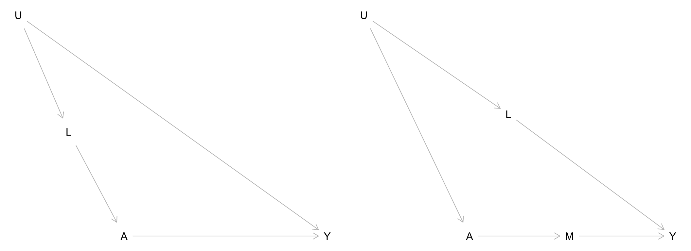
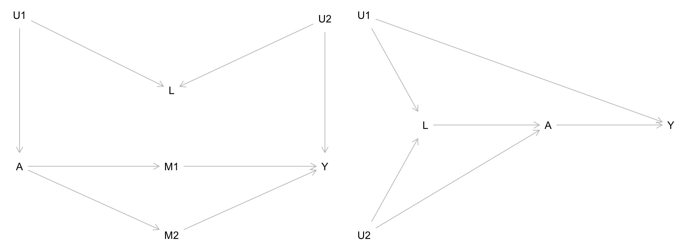
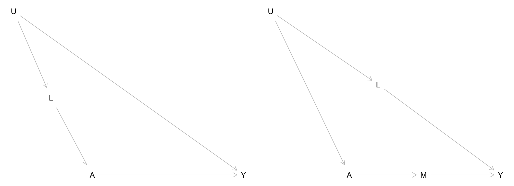
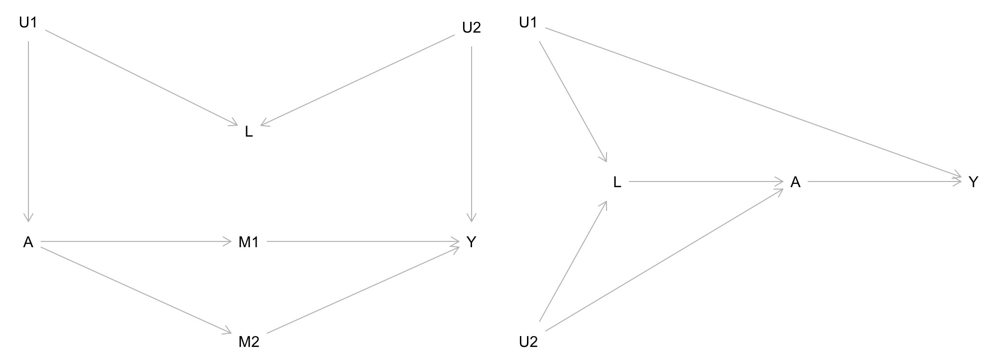
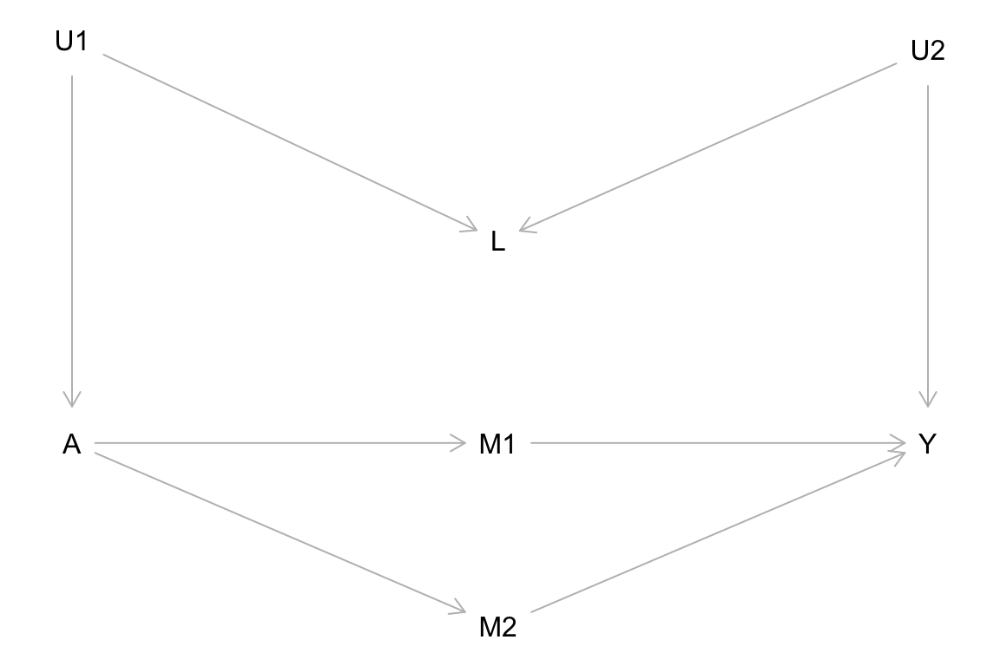

We’ll review pre-class material via the slides here.
For each of the causal graphs below, identify the set of variables needed to block noncausal paths (if possible) between treatment \(A\) and outcome \(Y\). Any \(U\) variables displayed in the graphs are unobserved/unmeasured.


Historically, people have tried to create definitions for confounders by listing criteria that purely rely on associations. For example:
A confounder must:
1. Be associated with treatment and outcome
2. Not be caused by treatment
Using the causal graph below, explain why this is not a good definition for a confounder.

First, think through the relationships depicted in the causal graphs below and whether they make sense. These are intended to reflect a range of scenarios for why people drop out of studies.
Then for each of the graphs, identify the set of variables that would block noncausal paths between the treatment \(A\) and outcome \(Y\). (\(U\) and \(W\) are unmeasured.) Check your answers to one of the graphs using DAGitty.
In this exercise, we’ll consider how causal graphs can inform study design. (Inspired by a 1970s study on the relationship between estrogen use and endometrial cancer.)
Researchers have noticed a consistent association between use of a certain drug and disease. Research groups debated two hypotheses:
The following study plan was proposed: restrict the study only to those with side effects and compare disease rates in drug-users and non-users. In this way, all participants have the same chance of being diagnosed.
The following causal graphs correspond to the two hypotheses:

(The graphs don’t show confounders of the drug-true disease relationship for compactness. We can assume that these have already been adjusted for.)
Consider the study proposal above: restrict analysis to those with side effects.
Before looking at the causal graphs: does the rationale for this study design make sense? Why did researchers want to only look at patients with side effects?
Under this study design, the researchers were expecting that if Hypothesis 1 were correct (the drug does cause disease), they would find an association between drug use and diagnosed disease. They expected that if Hypothesis 2 were correct (the drug does NOT cause disease), they would find NO association between drug use and diagnosed disease.
Based on your answer above, is this an effective study design for the research questions of interest? That is, can this study proposal distinguish between the two hypotheses?
Consider another study proposal: ensure that everyone is screened for disease frequently, and we don’t restrict our analysis to only those with side effects.
What arrow can be removed as a result of this study design? (It might help to draw an updated version of DAGs 1 and 2 with this arrow removed.)
Under this study design, the researchers had the same expectations: if Hypothesis 1 were correct, they would find an association between drug use and diagnosed disease. If Hypothesis 2 were correct, they would find NO association between drug use and diagnosed disease.
Based on your answer above, is this an effective study design for the research questions of interest? That is, can this study proposal distinguish between the two hypotheses?